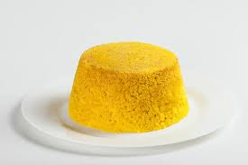

Cuscuz

Descrição
O cuscuz é uma receita supertradicional e que pode ser preparada facilmente. Servido até mesmo no café da manhã: aprenda como fazer cuscuz!
Ingredientes
- 2 xícaras (chá) de flocos de milho
- 1 xícara (chá) de água
- 1 colher (café) de sal
- 4 colheres (sobremesa) de Qualy Cremosa
- 1 colher (sopa) de pimentas biquinho em conserva bem picadas
- Coentro picado a gosto
Passos
- Em um recipiente, misture a farinha de flocos de milho e umedeça com a água. Junte também o sal. E deixe descansar por 20 minutos.
- Coloque a mistura em uma cuscuzeira e cozinhe o cuscuz no vapor. Caso não tenha a cuscuzeira, molde um punhado de cuscuz em um prato de sobremesa, formando um meio círculo; envolva o prato e o cuscuz, com um pano, formando uma trouxinha; vire o prato em uma panela com 2 dedos de água e leve ao fogo para que cozinhe no vapor por, aproximadamente, 20 minutos.
- Misture a Qualy com a pimenta e o coentro e sirva com o cuscuz quente.
HOME